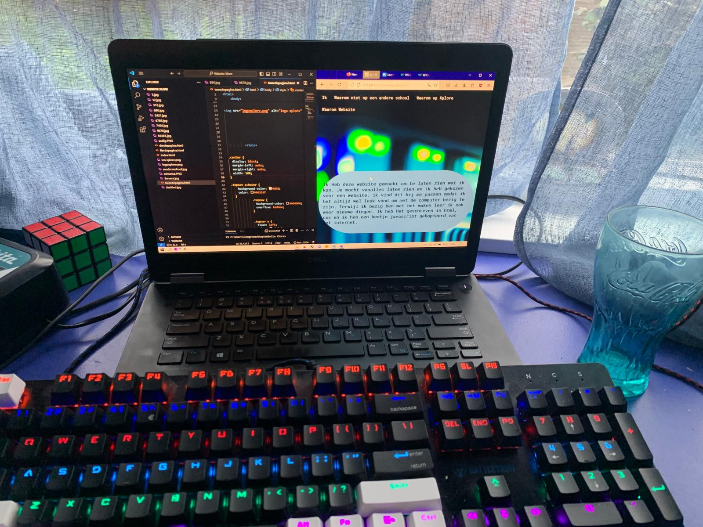

Ik Heb deze website gemaakt om te laten zien wat ik kan. Je mocht zelf kiezen in welke vorm je je motivatie wilde presenteren. Ik heb gekozen voor een website. Ik vind dit bij me passen omdat ik het altijd wel leuk vond om met de computer bezig te zijn.
Terwijl ik bezig ben met het maken leer ik ook weer nieuwe dingen. Ik heb het geschreven in html, css en ik heb een beetje javascript gekopieerd van het internet.
